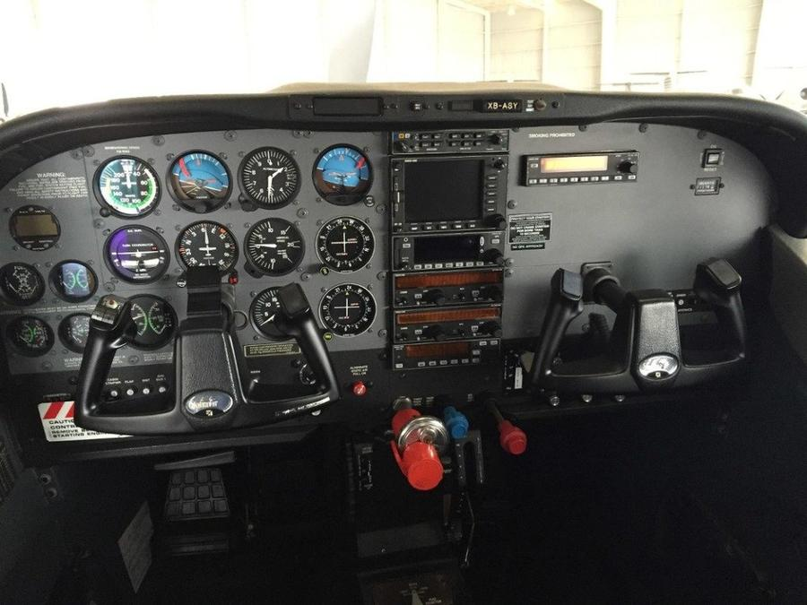
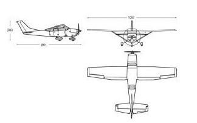
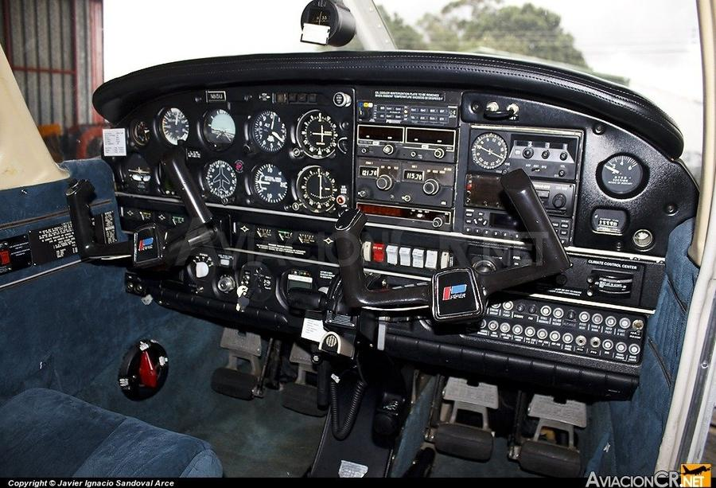
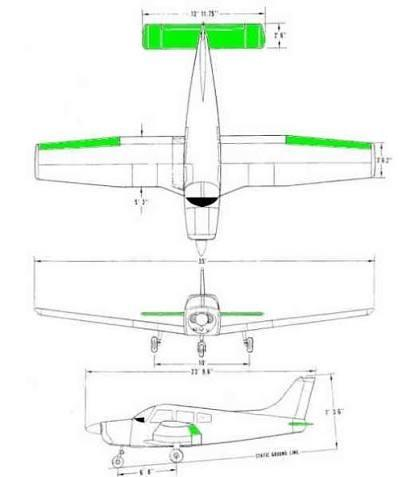
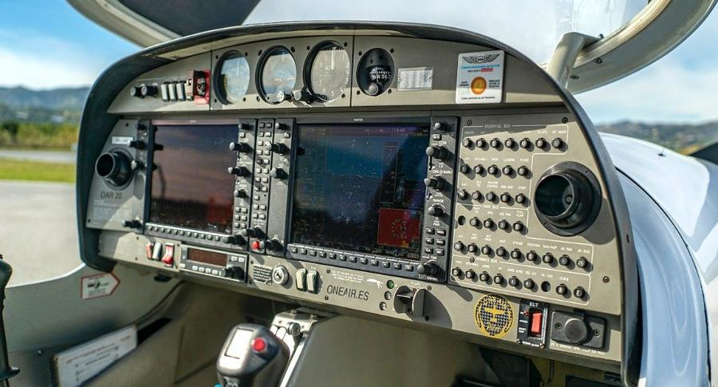
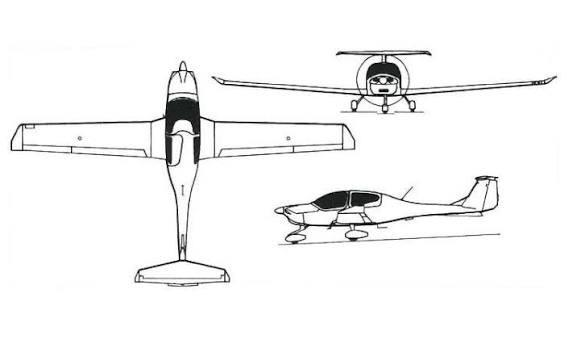
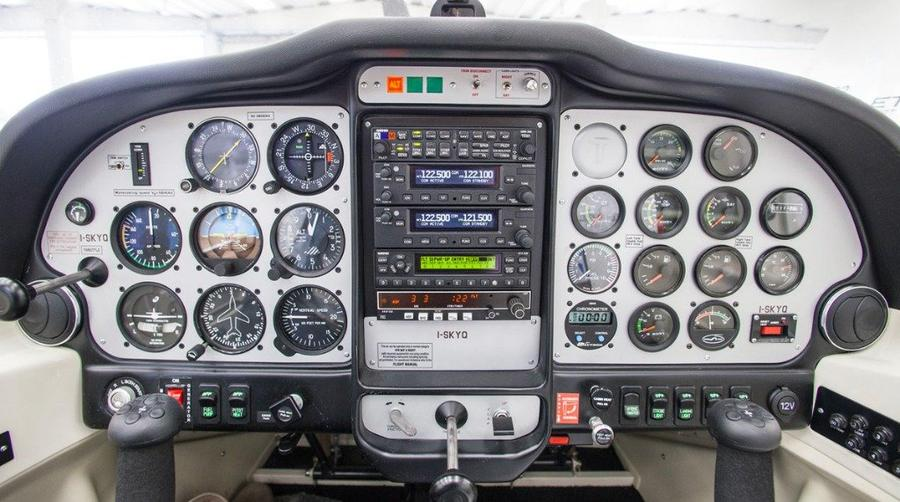
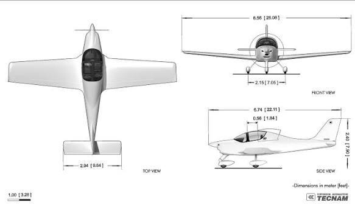

Fichas Técnicas de los Aviones (Datos Reales POH)
En este apartado se detallan las especificaciones técnicas reales de cada uno de los cuatro aviones de nuestra flota en el Aeropuerto de Bilbao (LEBB). Los datos proceden de los manuales de vuelo del fabricante (POH).
Para cada modelo incluimos una fotografía real del exterior, una foto de la cabina de mandos y un plano técnico de tres vistas con las dimensiones en metros.
1. Cessna 172S Skyhawk SP — Matrícula EC-MRX
Fabricante: Cessna Aircraft Company | Año: | Base: Bilbao Loiu (LEBB)
Avión de ala alta muy noble y seguro. Es el modelo más utilizado para aprender a volar porque perdona pequeños errores del alumno y permite ver muy bien el terreno por debajo del ala.

Vista Exterior (EC-MRX)

Cabina y Panel de Mandos

Plano de 3 Vistas con Medidas
Especificaciones Técnicas (Manual POH Cessna 172S)
| Motor | Lycoming IO-360-L2A (4 cilindros, inyección directa) |
| Potencia | 180 caballos a 2.700 RPM |
| Combustible y Capacidad | Gasolina de aviación AVGAS 100LL • Capacidad: 212 litros (200 útiles) |
| Consumo Medio | Aproximadamente 36 litros por hora al 75% de potencia |
| Velocidad de Crucero | 124 nudos (unos 230 km/h) |
| Velocidad de Pérdida (Vs0) | 40 nudos (74 km/h) con flaps bajados |
| Velocidad Máxima Nunca Exceder (Vne) | 163 nudos (302 km/h) |
| Altitud Máxima (Techo) | 14.000 pies (unos 4.260 metros) |
| Distancia de Despegue | 293 metros a nivel del mar |
| Autonomía | 640 Millas Náuticas (unos 1.185 km) |
| Pesos | Peso vacío: 755 kg • Carga útil: 402 kg • Peso máximo al despegue: 1.157 kg |
| Dimensiones | Envergadura: 11,00 m • Longitud: 8,28 m • Altura: 2,72 m |
| Plazas | 4 plazas (piloto + 3 pasajeros) |
Cómo se vuela este avión
- Despegue: Se levanta la rueda delantera a 55 nudos y se asciende a unos 74 nudos.
- Aterrizaje: Aproximación a unos 65 nudos con flaps a 20 o 30 grados para tocar suave en pista.
- Visibilidad: Al tener el ala arriba, la vista del suelo y de la costa durante los virajes es muy limpia.
2. Piper PA-28-181 Archer III — Matrícula EC-JMC
Fabricante: Piper Aircraft | Año: | Base: Bilbao Loiu (LEBB)
Avión de ala baja muy cómodo para viajes. Tiene un vuelo muy estable en crucero y responde de forma predecible con viento en el aeropuerto de Loiu.

Vista Exterior (EC-JMC)

Cabina y Cuernos Piper

Plano de 3 Vistas con Medidas
Especificaciones Técnicas (Manual POH Piper PA-28-181)
| Motor | Lycoming O-360-A4M (4 cilindros, carburador) |
| Potencia | 180 caballos a 2.700 RPM |
| Combustible y Capacidad | AVGAS 100LL • Capacidad: 189 litros (182 útiles) |
| Consumo Medio | Unos 38 litros por hora |
| Velocidad de Crucero | 128 nudos (unos 237 km/h) |
| Velocidad de Pérdida (Vs0) | 45 nudos (83 km/h) con flaps |
| Velocidad Máxima Nunca Exceder (Vne) | 154 nudos (285 km/h) |
| Altitud Máxima (Techo) | 14.100 pies (unos 4.300 metros) |
| Distancia de Despegue | 344 metros a nivel del mar |
| Autonomía | 520 Millas Náuticas (unos 963 km) |
| Pesos | Peso vacío: 760 kg • Carga útil: 397 kg • Peso máximo al despegue: 1.157 kg |
| Dimensiones | Envergadura: 10,80 m • Longitud: 7,30 m • Altura: 2,22 m |
| Plazas | 4 plazas con maletero posterior |
Cómo se vuela este avión
- Ala baja: Al estar cerca del suelo produce efecto suelo al aterrizar, lo que ayuda a posarse suavemente.
- Bomba eléctrica: Se conecta de forma obligatoria durante el despegue y el aterrizaje por seguridad.
- Flaps manuales: Se accionan mediante una palanca entre los dos asientos, similar al freno de mano de un coche.
3. Diamond DA40 NG Star — Matrícula EC-LRF
Fabricante: Diamond Aircraft Industries | Año: | Base: Bilbao Loiu (LEBB)
Avión moderno construido en fibra de vidrio y carbono. Su motor turbodiésel gasta poco y utiliza queroseno Jet-A1. Por dentro cuenta con pantallas Garmin G1000 que sustituyen los relojes clásicos.

Vista Exterior (EC-LRF)

Cabina Digital Garmin G1000

Plano de 3 Vistas con Medidas
Especificaciones Técnicas (Manual POH Diamond DA40 NG)
| Motor | Austro Engine AE300 (turbodiésel con centralita FADEC) |
| Potencia | 168 caballos con hélice de 3 palas |
| Combustible y Capacidad | Queroseno Jet-A1 / Diésel • Capacidad: 147 litros |
| Consumo Medio | Apenas 22 litros por hora (muy bajo consumo) |
| Velocidad de Crucero | 154 nudos (unos 285 km/h, el más rápido de la flota) |
| Velocidad de Pérdida (Vs0) | 49 nudos (91 km/h) |
| Velocidad Máxima Nunca Exceder (Vne) | 172 nudos (318 km/h) |
| Altitud Máxima (Techo) | 16.400 pies (unos 5.000 metros) |
| Distancia de Despegue | 390 metros en asfalto |
| Autonomía | 940 Millas Náuticas (unos 1.740 km de alcance) |
| Pesos | Peso vacío: 880 kg • Carga útil: 430 kg • Peso máximo al despegue: 1.310 kg |
| Dimensiones | Envergadura: 11,63 m • Longitud: 8,15 m • Altura: 1,98 m |
| Plazas | 4 plazas con cúpula acristalada que se abre hacia atrás |
Cómo se vuela este avión
- Control monomando: Una sola palanca de gases ajusta la potencia, la mezcla y las revoluciones gracias al ordenador del motor.
- Pantallas digitales: Muestran el horizonte artificial, velocidad, altitud y mapa GPS en dos pantallas grandes.
- Cola en T: El timón trasero está elevado, lo que hace el avión muy suave en virajes y maniobras.
4. Tecnam P2002 Sierra — Matrícula EC-LPI
Fabricante: Costruzioni Aeronautiche Tecnam | Año: | Base: Bilbao Loiu (LEBB)
Avión biplaza ligero construido íntegramente en aluminio. Es muy fácil de maniobrar, consume muy poca gasolina y es perfecto para dar los primeros pasos en el pilotaje.

Vista Exterior (EC-LPI)

Cabina Biplaza con Palancas

Plano de 3 Vistas con Medidas
Especificaciones Técnicas (Manual POH Tecnam P2002)
| Motor | Rotax 912 S2 (4 cilindros con reductora) |
| Potencia | 100 caballos a 5.800 RPM |
| Combustible y Capacidad | Gasolina normal de 95 octanos o AVGAS 100LL • Capacidad: 100 litros |
| Consumo Medio | Unos 17 litros por hora (la opción más económica) |
| Velocidad de Crucero | 115 nudos (unos 213 km/h) |
| Velocidad de Pérdida (Vs0) | 38 nudos (70 km/h) |
| Velocidad Máxima Nunca Exceder (Vne) | 138 nudos (255 km/h) |
| Altitud Máxima (Techo) | 15.000 pies (unos 4.570 metros) |
| Distancia de Despegue | 140 metros (despega en muy poca distancia) |
| Autonomía | 450 Millas Náuticas (unos 833 km) |
| Pesos | Peso vacío: 331 kg • Carga útil: 269 kg • Peso máximo al despegue: 600 kg |
| Dimensiones | Envergadura: 8,60 m • Longitud: 6,61 m • Altura: 2,43 m |
| Plazas | 2 plazas con palancas tipo stick |
Cómo se vuela este avión
- Mandos de palanca: En lugar de cuernos redondos lleva una palanca vertical de mandos, lo que da una sensación de vuelo muy ágil y deportiva.
- Despegue corto: Al pesar poco, se va al aire en apenas 140 metros de carrera sobre la pista.
- Flaps eléctricos: Se suben y bajan con un interruptor en el panel central.
¿Tienes dudas sobre qué avión elegir para tu vuelo?
Si no tienes claro cuál se ajusta mejor a lo que quieres hacer en Bilbao, puedes consultarnos o indicarlo en el formulario para que te recomendemos uno.
Ir al formulario de reserva Volver al catálogo general